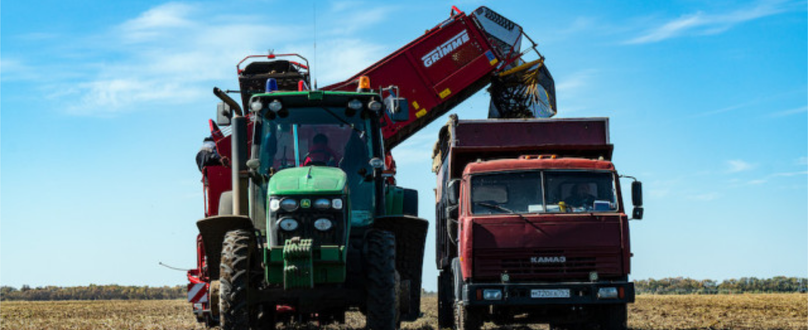

Приготовление чипсов на производстве
Чипсы едят все, но мало кто задумывается о том, какой путь они проходят до того, как попадают в пачку. За кадром остаются огромные поля, серьезные агротехнологии, сложное производство и хитрые способы переработки
Килограмм чипсов на жителя России в год
И очень похоже на то, что условный 1 кг чипсов на гражданина РФ год — не предел. Во-первых, потому что на долю PepsiCo (бренд Lay's) приходится почти две трети рынка чипсов нашей страны, и оставшаяся треть — это тоже ощутимый объем. Во-вторых, потому что в начале нулевых COVID-19 привел к всплеску спроса на снеки во всем мире высоко. Точную статистику пресс-служба PepsiCo не раскрывает, но речь идет о значительном росте.
Картофель, кстати, на полях не простой. В Ростовской области и на юге России для производства чипсов в основном используется специальный сорт BPO8. Он родом из Нидерландов, а выбрали его из-за двух особенностей: подходящей формы (он круглый — удобно чистить) и малого содержания сахара (при обжарке не темнеет). До начала 2000-х годов готовые чипсы PepsiCo привозила из-за границы, а в 2002 году компания запустила местное производство в Калуге. Производственная мощность завода, о котором идет речь, начинали с 2009 года с 20 га, а сегодня обрабатывают уже 350 га. Интересно, что пять комбайнов полностью собирают урожай за 20-30 дней.
Технологии, конечно же, добрались и до складов. На этапе заполнения картофелехранилища перед входом обязательно ставится линия дополнительной сортировки, чтобы с размером исходника для будущих чипсов все точно было в порядке. В день могут выдавать от 3,5 до 9 см. Каждая обязательно типа картофеля — от 3,3-3,5 тыс. т, картофелехранилища во время хранения «дышат» — поэтому помещение нужно вентилировать и охлаждать в теплое время года. Картофель закладывают на хранение сразу после уборки, а затем постепенно опускают один склад за другим. Те из них, в которых клубни лежат на хранении, как раз и оборудованы климатическими установками. Их включают с апреля по июль, когда среднесуточная температура превышает температуру хранения: плюс 8°С.
Агротехнологии: километровые «поливалки», датчики и дроны
За 13 лет хозяйство прошло большой путь в плане технологий. Хорошим подспорьем стала и до сих пор остается система орошения капельного типа, построенная общей длиной 1000 км. Это место оснащено датчиками влажности почвы, перекладными металлическими «треугольниками на колесах»: если не знать, то сразу даже непонятно, что это. Подобно блоке и видам возможностей самоходных систем полива и назад) могут растягиваться на длину вплоть до 850 м. Круговые (центральные возможности) — 200-400 м. Все они механизированы, оснащены множеством датчиков, которые используются в том числе для равномерного движения всех сегментов конструкции вперед.
Процесс сбора картофеля впечатляет не так, как системы полива, но и тут работает хорошая современная техника: тракторы John Deere с прицепными комбайнами Grimme и отдельные самоходные комбайн Grimme. Здесь удивляют два момента. В комбайне есть сортировочный стол, за которым работают несколько человек — вручную удаляют ботву и камни, с которыми не смогла справиться автоматика. А если пройтись по участку, который уже обработали комбайн, то видно, что в земле остается много картофеля. Кажется, что потери ощутимые, но на деле это не так. На поле остается не более 2-3% всего урожая, а в больших это маленькие клубни. Если отправлять их на производственную линию «чистого» завода, то при чистке потеряется много картофеля, и в итоге разрушится собирать мелкие экземпляры, а то, что остается в земле за зиму, превращается в питательные вещества.
Даже когда находишься на поле, за кадром остаются другие значимые технологические решения. Например, дроны. Конкретно здесь они используются для того, чтобы следить за тем, как развивается картофель. Поле фотографируется с воздуха, и приложение определяет спектральный анализ листьев. Проблемы, если они есть, на каком-то цвет листьев не соответствует стандартам, туда идет специалист, чтобы выявить проблему. Это огромная экономия времени: обойти десятки гектаров специалист хозяйства.
При выращивании картофеля крайне важно качество полива. С одной стороны это неотъемлемые уже упомянутые выше огромные дождевальные агрегаты. С другой, контролировать процесс помогают датчики влажности почвы. Внутри каждого — SIM-карта, с помощью которой данные передаются на сервер, а затем, в обработанном виде поступают к устройства специалистов хозяйства.
При выращивании картофеля крайне важно качество полива. С одной стороны это неотъемлемые уже упомянутые выше огромные дождевальные агрегаты. С другой, контролировать процесс помогают датчики влажности почвы. Внутри каждого — SIM-карта, с помощью которой данные передаются на сервер, а затем, в обработанном виде поступают к устройства специалистов хозяйства.